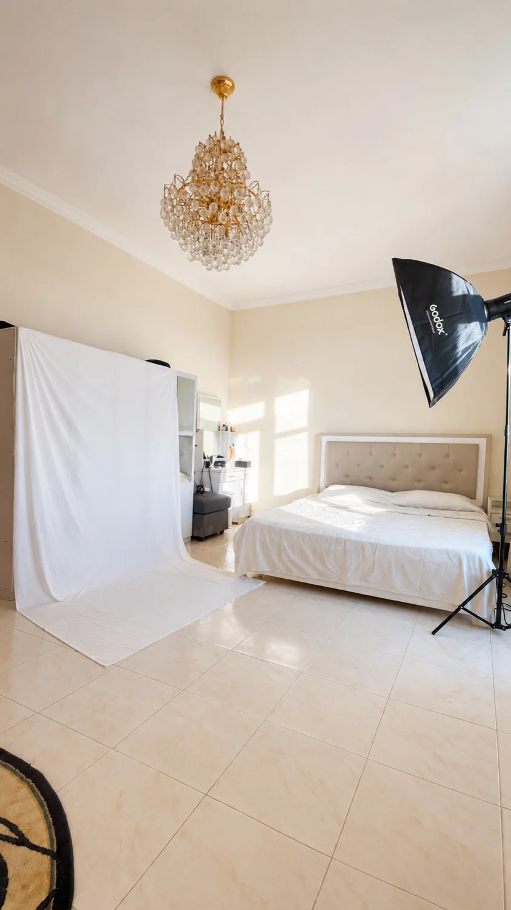

Everyone asks how to shoot portraits through a Dubai summer. My honest answer, after years of trying to fight it: most of the time, I don't. I bring the light indoors instead.
From roughly May through September, daytime temperatures in Dubai sit between 40 and 48 degrees, and the humidity along the coast makes it feel worse than the number suggests. I'll say this plainly because most photography content dances around it: outdoor portrait sessions in this window are genuinely hard on everyone involved, not just uncomfortable.
What the heat actually does to a shoot
It's not just about sweat. Makeup breaks down within twenty minutes under direct sun once temperatures cross the high 30s - foundation slides, powder cakes, and touch-ups become a constant interruption rather than an occasional one. Models lose the energy and expression a good portrait needs; nobody looks relaxed or confident when they're also trying not to overheat. Squinting becomes unavoidable without proper eyewear breaks, and outfits - especially anything structured or layered for an editorial look - become physically uncomfortable within minutes.
The gear suffers too. Camera bodies left in direct sun or in a hot car for even a short period can hit internal temperatures that trigger overheating warnings, especially on mirrorless bodies that already run warm during continuous shooting. Batteries drain faster in extreme heat, and lens elements can genuinely fog when you move equipment between an air-conditioned car and outdoor air.
Nobody looks relaxed or confident when they're also trying not to overheat. That shows up in every frame.
Why I go indoors instead
I'll be direct about my own preference here: through the peak summer months, my go-to is a studio or an indoor location, not a desperate 6 AM chase for a small window of tolerable outdoor light. It's not that outdoor summer photography is impossible - I still do it, and there are ways to make it work - but if a client has flexibility, I steer the conversation toward indoors.
The reason is simple. Indoors, I control every variable. No wind moving hair unpredictably, no harsh midday sun forcing hard shadows, no changing cloud cover shifting my exposure mid-session, and no clock racing against rising temperatures. I carry my own lighting equipment specifically so I'm never dependent on the sun being cooperative - my main light for these sessions is a Godox SK400II V, a studio strobe that gives me consistent, repeatable output shoot after shoot, in a controlled temperature environment where a model can actually relax between frames.

Neither of these is a dedicated photo studio - the heritage-style room in the cover shot above, or this one, are just spaces I've rigged for the day. The backdrop and the Godox go wherever I do - that's the whole point of not depending on the sun.
A studio or a well-lit apartment also means the whole session runs on a schedule that isn't dictated by when the sun is bearable. I've done full multi-look editorial sessions indoors in the middle of an August afternoon that would have been unworkable outside at the same hour - because inside, the temperature and the light are both things I'm setting, not things I'm reacting to.
If you still want to shoot outdoors in summer
Some concepts genuinely need an outdoor location - a specific piece of architecture, a desert backdrop, a client brief that calls for it. When that's the case, here's what actually helps:
Shoot at the edges of the day. The one to two hours after sunrise and the last hour before sunset are the only realistic windows in peak summer. Midday is not an option regardless of how good the light looks in theory.
Scout for shade with intention. Underpasses, building overhangs, and parking structures aren't glamorous, but they cut the temperature enough to keep a model functional between takes, and diffused shade light is often more flattering than harsh sun anyway.
Shorten the shot list. Plan fewer outfit changes and fewer setups than you would in winter. A tight, well-planned 30-minute outdoor session beats a two-hour one where everyone is visibly wilting by the halfway mark.
Protect the gear between takes. I keep bodies in the bag or in shade whenever I'm not actively shooting, never left on a seat in direct sun, and I let equipment acclimate gradually when moving between air conditioning and outdoor heat to avoid condensation on the lens.
If you're planning a session with me between May and September, expect me to suggest a studio or an indoor location first - not because outdoor Dubai photography isn't beautiful, but because I'd rather deliver images where you look like yourself, comfortable and confident, than images where both of us are racing the heat.
The light I bring with me doesn't care what the temperature is outside.
Work with me
Based in Dubai. Studio and indoor sessions available year-round, with full lighting equipment carried to any location. Models and agencies: WhatsApp is the fastest way to reach me.